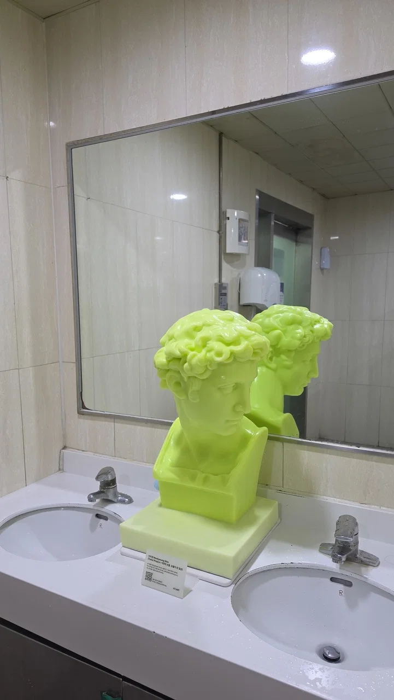

어떤 작가의 프로젝트 작품같은 건데
9월 7일부터 내년 8월 31일까지 독산역, 금천뮤지컬센터, 아트센터 예술의시간, 비누 제조업체 화장실에 두고 1년간 관찰할 예정
실제 비누를 쓰면서 조각상의 변화를 기록할 예정이고 여자화장실은 핑크색으로 저 작품이 있다고
과연 1년안에 다 쓸수 있을까

어떤 작가의 프로젝트 작품같은 건데
9월 7일부터 내년 8월 31일까지 독산역, 금천뮤지컬센터, 아트센터 예술의시간, 비누 제조업체 화장실에 두고 1년간 관찰할 예정
실제 비누를 쓰면서 조각상의 변화를 기록할 예정이고 여자화장실은 핑크색으로 저 작품이 있다고
과연 1년안에 다 쓸수 있을까
음?
앞에 물음표 빠졌다
페미전사는 진실만 말함
비켜봐
싫어 시발아 알아서 피해가라
콧구멍 존나 비비면서 닳고, 흉측해진 콧구녕 누가 빤찌 함 갈겨서 함몰될 예정
원형탈모엔딩일듯
가슴모양으로 남자화장실에 해놓으면 금방 닳겠다
손 안씻는 사람도 열정적으로 씻을듯
여자화장실은 ㅈㅈ모형 ㅋㅋㅋㅋㅋ
어느순간 통째로 사라짐
박살엔딩
대머리가 될듯~ㅋㅋ
남자 화장실은 박살.
여자 화장실은 도난 엔딩 예상해봄 ㅋㅋㅋㅋ
ㄹㅇ ㅋㅋㅋㅋㅋㅋㅋㅋㅋ
ㅋㅋㅋ 남자들 손 잘 안 씻어서 크게 변화없을듯. 매장에 손세정제 줄어드는 게 남여 차이 엄청 크더라
저거막 이상한거 꼽아놓고 그럴것 같은데
남고였으면 ㅈ모양으로 바뀜 ㅋㅋㅋ
ㅋㅋㅋㅋㅋㅋㅋㅋㅋㅋㅋㅋㅋㅋㅋㅋㅋㅋ
세수시켜주고싶네
최근 한국 예술가 중에서 주목받는 작가 중 한명인 신미경 작가 작품임.
비누로 작품을 만들고 시간에 따라 변화하는 거 까지가 작품의 일부인 작가.
63빌딩 정원에도 이번에 다른 두 분 작가 작품과 함께 설치되었고, 거기는 비바람과 함께 1년간 방치된 결과를 지켜볼 예정.
저것도 재밌겠네 ㅎㅎ 독산역 가봐야겠다.
근데 저게 왜 재밌어..? (개붕이 취향 폄하하려는게 아니고 내가 역 청소하는 사람이라 개인적으로 작품 이해가 안되어서 하는 질문임)
아, 보통 미술작품하면 떠오르는건 박물관이나 미술관에서 걸어두고 멀찍이 감상하는 거잖아?
근데 저 작품같은 경우에는 작가가 공공장소에 설치해두고 사람들과 소통하는거까지 염두에 둔거란 말야.
저 작가분 작품도 사실 그냥 전시용 조각이었으면 몇천에서 몇억에 이르는데,
재밌다는 건 이런 이유들 떄문이야.
1. 저걸 만져볼 수 있다는 거 그 자체
2. 게다가 설치장소가 미술관 같은 곳이었으면 남들 눈치도 좀 보다보니 적당히 만지고 말텐데, 아주 개인적인 공간인 화장실이란 공간에 설치했다는 거. (남들 눈치 보지 않고 그냥 마구 만질 수 있으니까)
3. 사람들이 손씻으며 문지르면 계속 녹아내릴텐데, 내가 거기 들리는 시점의 작품만 내가 볼 수 있다는 거. (심지어 부서져 있다고 하더라도 그 광경도 내가 목격하겠지.)
4. 마지막으로 작가의 작품이라는 이유 때문에 그런 대접을 받는 비누의 꼬라지
나한테는 이런것들이 재밌는 점이고, 사람들마다 이런 점들이 각자 있을거야.
물론 재미가 없고 이해도 안되는 사람도 있음.
개붕이가 역 청소하는 사람이라고 했으니, 그 입장을 생각해보면 정 반대로 존나 불편하고 민폐라고까지 느낄 수도 있을 거 같음.
똑같은 사물에 대해 여러 생각이 존재한다는게 나한테는 재미있고 흥미롭긴 함.
누가 들고가는거 아니냐 ㄷㄷㄷ
독산동네면 씨씨티비 설치 하지않음 저거 통째로 사라지거나 조각조각 잘라 가져가는 새끼도 일을거고 길게 일주일 본다 ㅋㅋㅋㅋ
그것도 작품 과정의 일부임
남자대가리를 뭐하러.... 여자흉상으로 해두지...
훔쳐가는것까지 예술
비누 쓰다보면 갈라지고 딱딱하고 퍼석퍼석해져서 거품도 잘안나던데 비슷하게 써지다 말지 않을까
비누 ㅈㄴ만지기 싫어서 짜는거아니면 안씀 세균없다해도 걍 찝찝해
회색거품ㅋㅋㅋ
그냥 기분탓임 그럼 식당에서 숟가락은 어떻게쓰냐
노가다 아재가 땀벅벅돼서 술담배하고 더러운 침 다 묻혔던건데 한번 닦았다고해도 깨끗하다는 보장은 없는데
너 때문에 이제 못쓸거 같애
비누는 쓰려고 볼때 구정물 말라서 수박무늬마냥 남아있는거 보면 찝찝할때가 있긴함 어쨌든 주방에서 세제로 닦아나온 숟가락하고는 좀 다르지
한남들 오줌 똥 싸고 손 존나 안닦음
1년 지나도 멀쩡 할듯